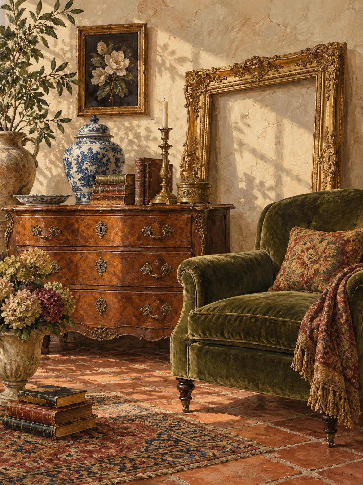

For your home
Furniture, framed pictures, lamps, and decorative pieces with a past.
A LITTLE HISTORY. A LITTLE SERENDIPITY.
A treasure hunt in the heart of downtown Apex. Discover antiques, collectibles, and the pieces that make a house feel like yours.

THE JOY IS IN THE FINDING
Furniture, jewelry, glassware, and unexpected keepsakes. These are the kinds of finds visitors have described—call the shop to ask about today’s selection.
Furniture, framed pictures, lamps, and decorative pieces with a past.
Costume jewelry, glassware, vintage kitchenware, and collectible curiosities.
Books, linens, old tools, and the small discoveries you didn’t know you were looking for.
Categories drawn from public listings and customer feedback. Availability varies; this is not an online inventory.
NORTH SALEM STREET
APEX, NORTH CAROLINA
A PLACE TO TAKE YOUR TIME
Antiques on Salem Street is an independent antique shop on North Salem Street in historic downtown Apex. Visit Raleigh describes the business as selling antiques, collectibles, and furniture since 1998.
Customer stories paint a picture of a densely packed shop made for unhurried browsing. Some come for a particular collectible. Others leave with something entirely unexpected.
Find the shop on Facebook ↗FROM THE PEOPLE WHO HAVE BEEN
WHAT PEOPLE DISCOVER
Reviewers describe an eclectic mix of jewelry, pictures, furniture, glassware, and surprising gifts. Many enjoy the hunt and the chance to find an unusual piece.
GOOD TO KNOW
Several visitors mention tightly packed displays and limited walking space. Reviews are mixed on organization, prices, and service; ask about a piece’s price before deciding.
BEFORE YOU SET OUT
Some visitors report finding the shop closed during listed hours. Call ahead to confirm opening times, especially if you’re making a special trip.
Summaries of public Google reviews, including positive and critical feedback.
Read all reviews on Google ↗YOUR NEXT FIND IS JUST A VISIT AWAY
Published regular hours. Please call before traveling to confirm hours and any special closures.
Google Maps shows distance and travel time from your chosen starting point or current location.
A FEW THINGS BEFORE YOU COME
Call (919) 362-1332 or email the shop with a description of what you’re looking for. This concept website does not display live stock or accept purchases.
Public listings mention street parking. Use Google Maps to find nearby parking, and check posted signs when you arrive.
A browse-at-your-own-pace antique shop. Visitors mention a wide range of objects and closely packed displays. Call ahead if you need to confirm step-free access, aisle space, or other accessibility arrangements.
Contact details and regular hours: Visit Raleigh. Rating, review themes, and location: Google Maps, checked October 27, 2026. Inventory categories also reflect historical customer descriptions. Details can change.